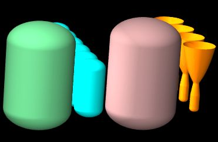

POV-Ray¶
The POV-Ray raytracing package is used by PRISM to give dimensional representations of hardware to aide in early layout and packaging. It is not intended as a substitute for a CAD drawing or any kind of detailed representation of the hardware.
The user can define a rendering routine in order to achieve better packaging insights, or simply let PRISM array the hardware items in rows.
Custom Layouts¶
To create a custom layout, define a rendering routine:
S.setRenderControlRoutine(myRenderControlRoutine)
Default Layouts¶
Without a rendering routine, the items will be laid out in rows.
Render Routine¶
Items that have a method called getPOV_Item can be positioned into the POV-Ray image. The color of each item is controlled by setting its texture attribute. Each item can be positioned and oriented with their translate and rotate methods. An example is shown below:
Hetank.texture = Texture( colorName="Gray50" )
Oxtank.texture = Texture( colorName="Aquamarine" )
Fltank.texture = Texture( colorName="Pink" )
def myRenderControlRoutine(S):
rVeh = 20.0
he = Hetank.getPOV_Item()
r = rVeh - Hetank.pov_d/2
he.translate([0,0,r])
fl = Fltank.getPOV_Item()
r = rVeh - Fltank.pov_d/2
fl.translate([r*cos(30.*pi/180),0.,-r*sin(30.*pi/180)])
ox = Oxtank.getPOV_Item()
r = rVeh - Oxtank.pov_d/2
ox.translate([-r*cos(30.*pi/180),0.,-r*sin(30.*pi/180)])
eng = Engine.getPOV_Item()
eng.rotate([180,0,0])
eng.translate([0,Engine.Lnoz + Engine.Lcham,0])
povItemL = [he, fl, ox, eng]#, shell]
return povItemL
S.setRenderControlRoutine(myRenderControlRoutine)
S.render(view='front',ortho=0)
S.render(view='back',ortho=1, clockX=15, clockY=15)